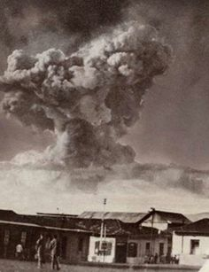
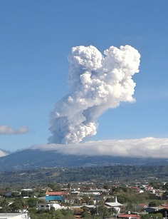

HISTORIA
El Parque Nacional Volcán Poás fue establecido en 1955 con una extensión territorial aproximada de 1200 ha. Con la ratificación de 1970 y posterior ampliación de su territorio Decreto Ejecutivo No. 22961-MIRENEM, del 19 de enero de 1994, la extensión del parque llegó a 6506 ha.
A esta área los españoles le llamaron botos, refiriéndose a un grupo de indígenas que poblaron las faldas al norte del volcán. El término Poás puede derivarse del nombre latino “púas” debido a la presencia de algunas plantas con púas en la zona o a la existencia de un pueblo denominado “Púas” ubicado cerca del macizo.
El Volcán Poás tiene un historial de erupciones donde sobresale la de 1910, que consistió en una inmensa nube de ceniza que se elevó hasta unos 8000 m. Este Parque Nacional es uno de los atractivos naturales más importantes para el turismo nacional e internacional.
Fecha de Creación: 25 de enero de 1971Extensión: 6506 Ha.
Altitud: 2708 m.s.n.m.
Temperatura promedio: 12ºC
Precipitación Promedio: 3500 mm
Cráter principal
Diámetro: 1320 metros
Profundidad: 300 metros
Laguna Botos
Diámetro: 400 metrosProfundidad: 14 metros
 